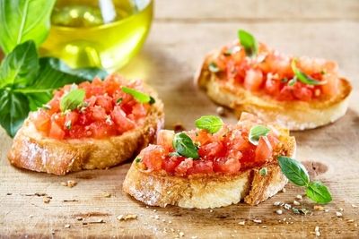
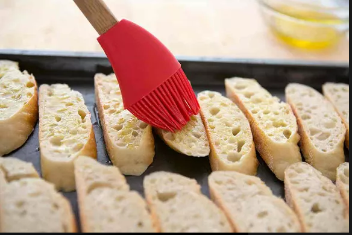
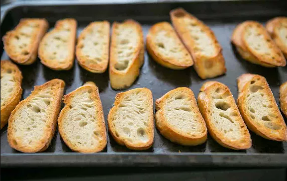

Bruschetta

Ah bruschetta, one of the best ways to enjoy the bounty of summer. Pronounced "brusketta", this classic Italian appetizer is a perfect way to capture the flavors of garden ripened tomatoes, fresh basil, garlic, and olive oil. Think of it as summer on toast!
- 6 to 7 italians tomatoes
- 2 cloves garlic, minced
- 6 to 8 fresh basil leaves
- 3/4 teaspoon sea salt, more or less to taste
- 1 baguette, French bread, or similar Italian bread
- A LOT OF olive oil
- Blanch and peel the tomatoes
- Preheat oven
- Chop tomatoes, toss them with garlic, olive oil, vinegar, basil, salt and pepper
- Toast the baguette slices
>

- Serve toasted bread with tomato mixture